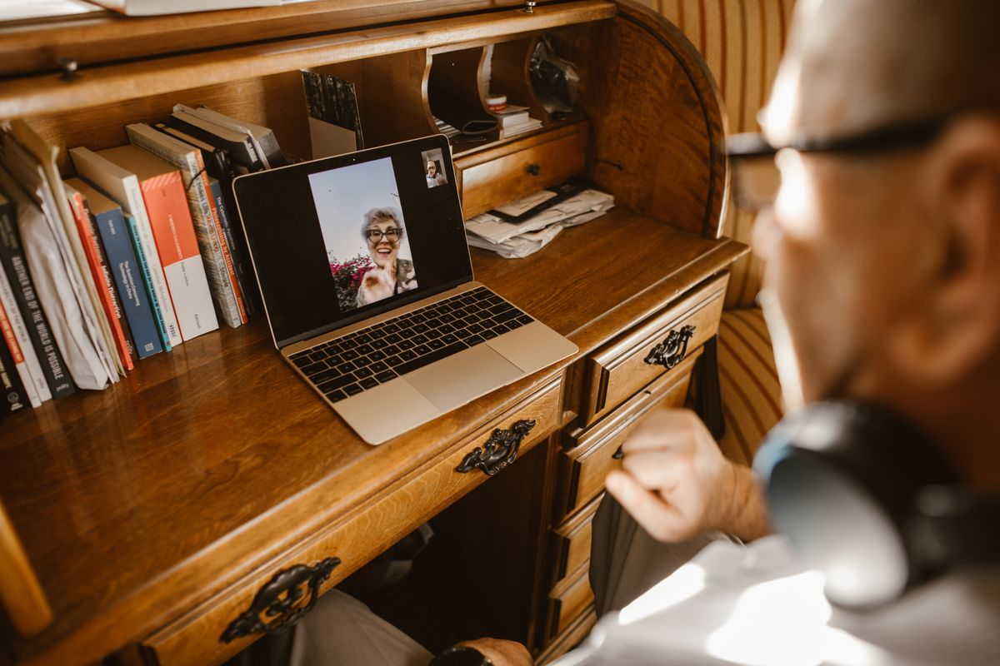

RustDesk adalah aplikasi remote desktop gratis dan open source yang bisa menggantikan TeamViewer buat mengendalikan komputer dari jarak jauh, tanpa batas waktu sesi dan tanpa tuduhan pemakaian komersial. Kamu unduh aplikasinya, bagikan ID dan kata sandi sekali pakai ke orang yang kamu percaya, lalu dia bisa melihat dan mengendalikan layar komputermu dari mana saja, per November 2026.
RustDesk bekerja mirip TeamViewer: tiap komputer punya ID unik dan kata sandi sekali pakai, jadi kamu cukup memasukkan ID komputer tujuan lalu mengetik kata sandinya. Bedanya, RustDesk berlisensi open source AGPL-3.0 dan kliennya gratis untuk semua pemakaian, termasuk urusan kerja, tanpa batas jumlah perangkat dan tanpa batas waktu sesi. Kalau tidak mau repot, kamu bisa memakai server publik RustDesk secara gratis, tapi sejak 2026 RustDesk mewajibkan kamu masuk dengan akun Google atau GitHub saat memakai server publik, langkah ini dibuat untuk menekan penyalahgunaan oleh penipu. Kalau mau kendali penuh, kamu bisa memasang server sendiri di VPS atau komputer rumah memakai Docker, dan semua koneksi tidak lagi lewat server pihak ketiga. RustDesk tersedia untuk Windows, macOS, Linux, Android, dan iOS, serta punya mode transfer berkas terpisah dan akses tanpa pendamping dengan kata sandi tetap. Versi terbaru kliennya adalah 1.5.1 yang rilis 1 November 2026, dan versi Pro berbayar hanya menambah konsol web, buku alamat, dan log audit, mulai 11,88 dolar Amerika per bulan.
Kenapa versi gratis TeamViewer sering bikin kesal?
TeamViewer memang masih gratis untuk pemakaian pribadi, tapi garis antara pribadi dan komersial sering jadi masalah. Banyak pengguna rumahan yang hanya membantu keluarga memperbaiki laptop malah kena tuduhan pemakaian komersial, lalu sesinya diputus setelah beberapa menit dan diminta membeli lisensi. Keluhan soal tuduhan inilah yang membuat banyak orang mencari pengganti. AnyDesk punya aturan mirip: gratis hanya untuk pemakaian pribadi. Selama ada aturan seperti itu, kamu tidak pernah benar-benar tenang saat membantu orang tua yang laptopnya bermasalah dari kota lain, karena sesi bisa putus di tengah jalan.

Apa itu RustDesk dan apa bedanya dengan TeamViewer?
RustDesk adalah aplikasi remote desktop open source yang ditulis dengan bahasa Rust, dan situs resminya terang-terangan menyebut dirinya sebagai pengganti TeamViewer, AnyDesk, dan Splashtop. Tampilannya sengaja dibuat mirip: ada kolom ID, ada kata sandi, ada tombol sambung. Jadi kalau kamu sudah pernah memakai TeamViewer, kamu tidak perlu belajar dari nol. Perbedaan terbesarnya ada di dua hal. Pertama, lisensi. Klien RustDesk gratis dan open source di bawah lisensi AGPL-3.0, jadi tidak ada deteksi pemakaian komersial, tidak ada batas waktu sesi, dan tidak ada batas jumlah perangkat yang kamu sambungkan. Kedua, servernya bisa kamu pasang sendiri. RustDesk menyediakan server gratis berbasis Docker yang terdiri dari dua bagian kecil, hbbs untuk pengenal dan hbbr untuk relay, dan sekali dipasang, koneksi kamu tidak lagi lewat server perusahaan mana pun. Semua sesi dienkripsi ujung ke ujung memakai NaCl, dan kode sumbernya terbuka sehingga siapa pun bisa memeriksa isinya. Situs resminya mencatat proyek ini sudah mengumpulkan lebih dari 113 ribu bintang di GitHub, per November 2026.
Bagaimana cara memakai RustDesk buat pertama kali?
Untuk pemakaian biasa kamu tidak perlu memasang server sendiri. Ikuti langkah ini di kedua komputer, komputer yang dikendalikan dan komputer yang mengendalikan:
- Unduh RustDesk hanya dari situs resmi rustdesk.com atau dari halaman rilis resminya, jangan dari situs unduhan lain. Situs resminya sendiri menegaskan rustdesk.com adalah satu-satunya domain resmi mereka.
- Pasang atau jalankan aplikasinya. Di Windows, RustDesk bisa jalan tanpa instalasi sebagai aplikasi portabel.
- Catat ID dan kata sandi sekali pakai yang muncul di layar komputer tujuan.
- Di komputermu, ketik ID itu, tekan sambung, lalu masukkan kata sandinya.
- Kalau kamu sering membantu komputer yang sama, atur kata sandi tetap supaya bisa masuk tanpa ada orang di depan komputer tujuan.
Selain mengendalikan layar, RustDesk punya mode transfer berkas terpisah dengan tampilan dua panel, jadi kamu bisa mengirim berkas dari komputermu ke komputer tujuan atau sebaliknya tanpa membuka sesi layar penuh. Fitur ini sudah termasuk di versi gratis, tidak dikunci di balik langganan Pro.
Kapan RustDesk bukan pilihan yang tepat?
RustDesk bukan untuk semua orang. Kalau kamu butuh alat untuk main game jarak jauh atau streaming video dengan latensi rendah, RustDesk bukan jawabannya, karena alat seperti Parsec memang dibuat untuk itu. Di Android, aplikasi RustDesk tidak lagi tersedia di Google Play, jadi kamu perlu mengunduh APK dari rilis resmi atau lewat F-Droid. Versi Pro berbayar juga ada, mulai 11,88 dolar Amerika per bulan untuk satu pengguna, tapi yang dibayar di sana hanya konsol web, buku alamat, dan log audit, sementara semua fungsi intinya tetap gratis. Satu hal yang wajib kamu ingat: aplikasi remote desktop adalah alat favorit penipu. Jangan pernah memasang RustDesk atau membagikan ID dan kata sandimu ke orang yang meneleponmu tiba-tiba dan mengaku dari bank, penyedia internet, atau layanan resmi. Tidak ada bank yang meminta akses remote ke komputermu. Selama kamu hanya membagikan akses ke orang yang kamu kenal dan kamu percaya, RustDesk adalah pengganti TeamViewer yang paling masuk akal buat pemakaian rumahan dan tim kecil, per November 2026.
Intinya, kalau kamu kesal karena sesi TeamViewer gratis sering diputus, RustDesk memberi jalan keluar yang gratis beneran dan legal: unduh dari situs resminya, sambungkan dua komputer, dan kamu bisa membantu siapa pun dari jarak jauh tanpa takut sesi putus di tengah jalan.
Baca juga: Joplin, aplikasi catatan gratis pengganti Evernote, Obsidian, alternatif gratis Notion yang menyimpan catatan di perangkatmu sendiri, dan LocalSend buat kirim file HP ke laptop apa pun gratis. Kamu juga bisa melihat kumpulan artikel Other dan artikel riset di blog.
Sumber dan Info Resmi
Fakta dan langkah di artikel ini merujuk ke sumber berikut:
- RustDesk: situs resmi menyebut RustDesk pengganti TeamViewer, AnyDesk, dan Splashtop; server bisa dipasang sendiri; rustdesk.com satu-satunya domain resmi; proyek ini sudah mengumpulkan lebih dari 113 ribu bintang di GitHub.
- MakeUseOf: tidak ada deteksi pemakaian komersial, tidak ada batas waktu sesi, tidak ada batas jumlah perangkat; mode transfer berkas termasuk di versi gratis; tidak cocok untuk gaming atau streaming latensi rendah, Parsec lebih baik.
- MakeUseOf: TeamViewer gratis hanya pemakaian pribadi dan sering menandai pemakaian sebagai komersial; RustDesk mewajibkan masuk dengan akun Google atau GitHub saat memakai server publik, langkah menekan penyalahgunaan oleh penipu.
- OpenMSP: lisensi AGPL-3.0; versi 1.5.1 rilis 1 November 2026; server Pro Individual mulai 11,88 dolar Amerika per bulan; sesi dienkripsi ujung ke ujung memakai NaCl.
- StackPicks: klien tersedia untuk Windows, macOS, Linux, Android, dan iOS; server ID dan relay bisa dipasang sendiri.
- Papyrus: aplikasi Android tidak lagi tersedia di Google Play, diunduh sebagai APK dari rilis resmi atau lewat F-Droid; Pro Individual 11,88 dolar Amerika per bulan untuk 1 pengguna dan 20 perangkat.
- AltApp: TeamViewer gratis hanya pemakaian pribadi, pemakaian kerja butuh langganan; RustDesk open source dan bisa dipasang di server sendiri; AnyDesk gratis hanya pemakaian pribadi.
- Rigorous Themes: RustDesk gratis penuh tanpa deteksi pemakaian komersial dan tanpa batas waktu sesi; paket Pro mulai 11,88 dolar Amerika per bulan untuk individu.